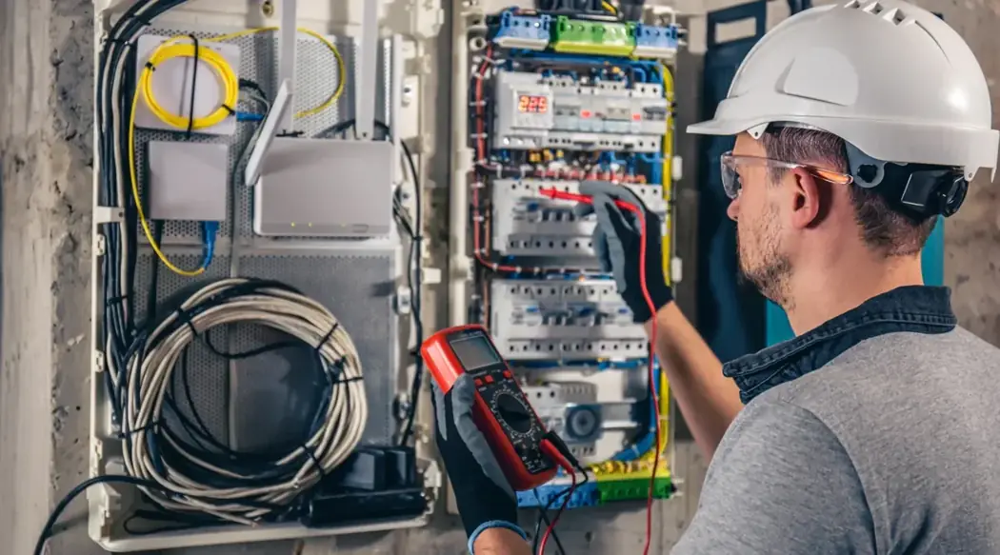
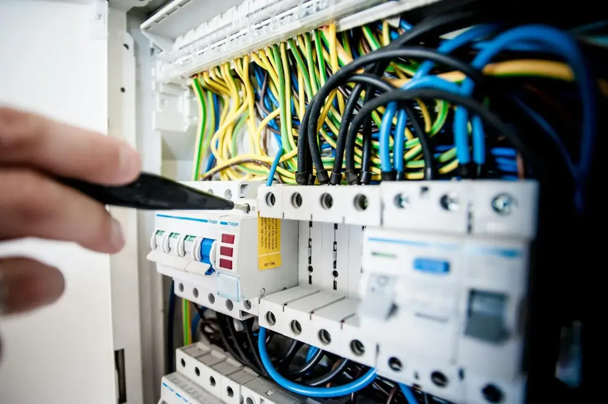
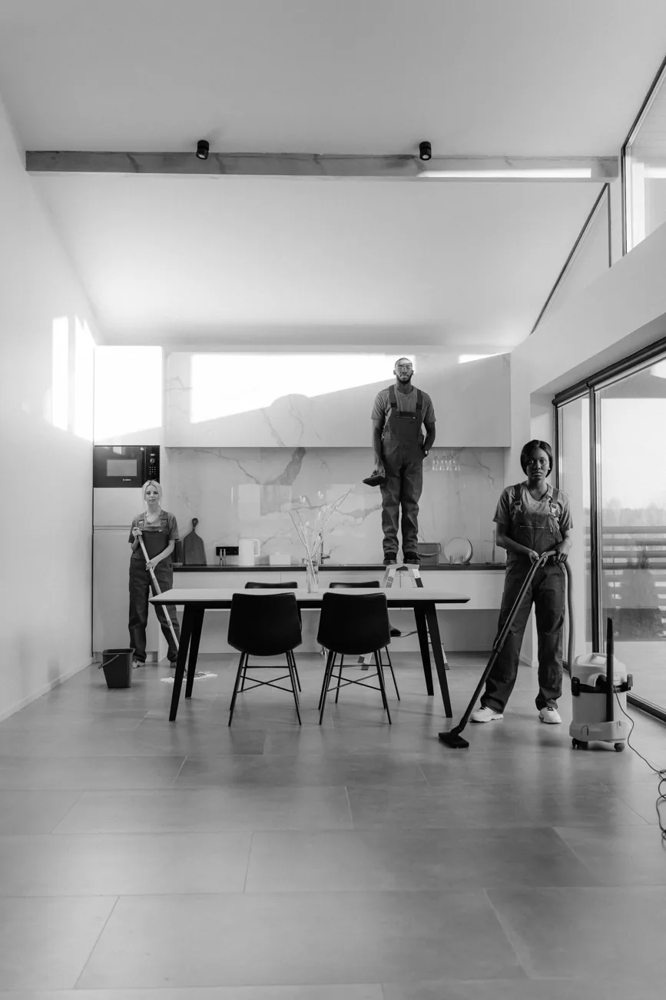

Instalaciones Eléctricas Vifer: Tu garantía de tranquilidad
En Instalaciones Eléctricas Vifer, no solo resolvemos averías; te ofrecemos una "Garantía de Tranquilidad" que asegura la seguridad y eficiencia de tu instalación eléctrica para los próximos 10 años. Con más de 25 años de experiencia, somos tu electricista de confianza en Bilbao, comprometidos con la seguridad, transparencia y la innovación útil.

La diferencia Vifer: Compromiso con el detalle
La principal razón para elegirnos no es solo que "sabemos arreglar averías", sino por nuestra Garantía de Tranquilidad. A diferencia de otras empresas que solo buscan la rapidez, en Vifer aplicamos lo que llamamos "Instalación de Futuro": no solo solucionamos el problema de hoy, sino que revisamos que tu instalación sea segura y eficiente para los próximos 10 años. Lo que más valoramos en nuestro trabajo es la seguridad sin concesiones, la transparencia total, la limpieza y el respeto por tu hogar, y la innovación útil que realmente te ahorra dinero.

25 años de energía: Una trayectoria que te beneficia
Llevar más de un cuarto de siglo en un sector tan técnico como el eléctrico es fruto de la adaptabilidad y la vocación de servicio. Hemos visto cómo la tecnología ha pasado de los simples plomos de porcelana a los hogares inteligentes y las placas solares. Para nuestros clientes, esta experiencia se traduce en diagnósticos certeros que ahorran tiempo y dinero, un criterio técnico inigualable que elige siempre calidad probada, total tranquilidad legal al dominar el Reglamento Electrotécnico de Baja Tensión (REBT) de principio a fin, y el respaldo de una empresa que sigue aquí, respondiendo por sus trabajos.

Seguridad y tranquilidad: Nuestro compromiso total
Ya sea en tu hogar o en la industria, tu seguridad y paz mental son nuestra prioridad. En el hogar, ofrecemos explicaciones claras y sin tecnicismos, certificamos cada instalación según el REBT y priorizamos la instalación de diferenciales de alta sensibilidad y protectores contra sobretensiones para proteger tus electrodomésticos y dispositivos. Para la industria, aseguramos continuidad con mantenimiento preventivo, termografías para detectar puntos calientes, una respuesta ágil ante averías y protocolos de seguridad rigurosos. Nuestra regla de oro: si no dejaríamos que nuestra propia familia viviera con esa instalación, no la entregamos al cliente.
"Nuestra mayor satisfacción: Que cuando un amigo o familiar tuyo tenga un problema eléctrico, digas sin dudar: 'Llama a Vifer, son los mejores'."
Instalaciones Eléctricas Vifer: Más que un servicio, una alianza de confianza